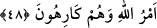
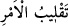

48. (Onlar) önceden de fitne çıkarmak istediler ve sana karşı bir takım işler
çevirdiler. Nihayet hak geldi, onlar istemedikleri halde Allah’ın emri galebe çaldı.
O münâfıklar “önceden de” yani Tebük Gazvesinden önce Uhud gazvesinde de “fitne
çıkarmak” birliğini dağıtmak ve ashâbını senden ayırmak “istediler.” Nitekim Übey,
Uhud Savaşı’nda üç yüz arkadaşı ile birlikte ayrılmış, Hz. Peygamber (a.s.) yedi yüz
samimi müslümanla kalmıştı. Peygamber (a.s.) Tebük gazvesi için yola çıkıp
Seniyyetü’l-vedâ tepesinin aşağısındaki Zîcidde’de konakladıkları sırada da Übey
yandaşları ile birlikte geri dönmüştü. Kezâ Hendek harbinde de fitne çıkarmak
istemişler: “Ey Yesribliler (Medineliler)! Artık sizin için durmanın sırası değil,
haydi dönün.” (el-Ahzâb, 33/13) demişlerdi. Akabe gecesinde de geceleyin Rasûlullah
(s.a.)’in devesinin ayaklarının arasına ürksün ve O’nu sırtından atsın diye bir şey
atmışlardı. Yine Akabe gecesinde münâfıklardan on iki kişi Hz. Peygamber (a.s.)’a
suikasdda bulunmak için Seniyyetü’l-vedâ’da pusu kurmuşlardı. Allah, durumu bildirdi
ve onu onlardan kurtardı.
“ve sana karşı bir takım işler çevirdiler.” Dâvânı ortadan kaldırmak için sana nice
hile ve tuzaklar kurdular. Bu uğurda çalıştılar ve yeni yeni fikirler ortaya attılar.
“ , (işleri ters yüz etmek)” düşmanına hîle ve tuzak kurmak ve bu uğurda çaba
sarfetmek maksadıyla, bir işi sürekli bir yönden bir başka yöne çevirmek demektir.
“Nihayet hak” Allah’ın yardımı, zafer ve ilâhi destek “geldi, onlar istemedikleri
halde” onlara rağmen “Allah’ın emri gelebe çaldı.” Allah’ın dini galip oldu ve şerefi
yükseldi.
Kâşifî der ki: Onlar senin zaferini ve devletini istemeyenlerdir. Ancak Allah Teâlâ
dileyince onların iğrenmelerinin bir etkisi yoktur.
Şah haremine senin girmene izin verdiğinde
Perdedârın feryâdına ve kapıcının azarlamasına aldırma!
Bu âyetlerde münâfıkların halinin kötülendiğine, Rasûlullah (s.a.) ve müminlerin
tesellî edildiğine ve âkıbetin takvâ sahiplerinin olduğunun beyan edildiğine dikkat et! O
vakitten bu zamana kadar insanların ihlaslı olanı ile münâfık olanı birbirine karışmış
vaziyettedir. Sâdık ve sâlih bir niyete sahip olan kişi hevâ ve riyâ ehlinden uzak
durmayı tercih eder. Çünkü kendi cinsinden olmayan kimselerle sohbet ve dostluk, din
konusunda karışıklık ve tefrikadan ve ehl-i yakînin azimet anlayışında tembellikten
başka bir şey kazandırmaz. Öyleyse riyâkarları görmemeye ve onlarla hemhal olmamaya
çalış. Onların arasına karışır ve onlarla ünsiyet kurarsan hâlin nice olur ey miskin!
Mesnevî’de denilir ki:
Boş testinin ağzını kapatıp
Havuz veya bir ırmağa atınca